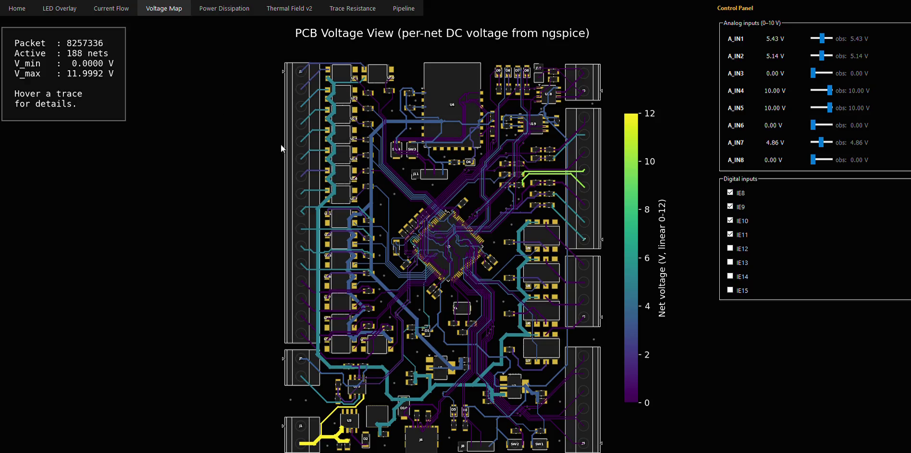
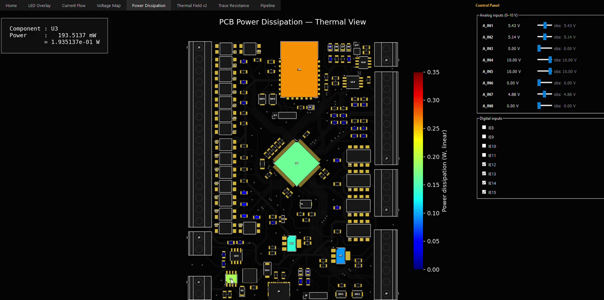
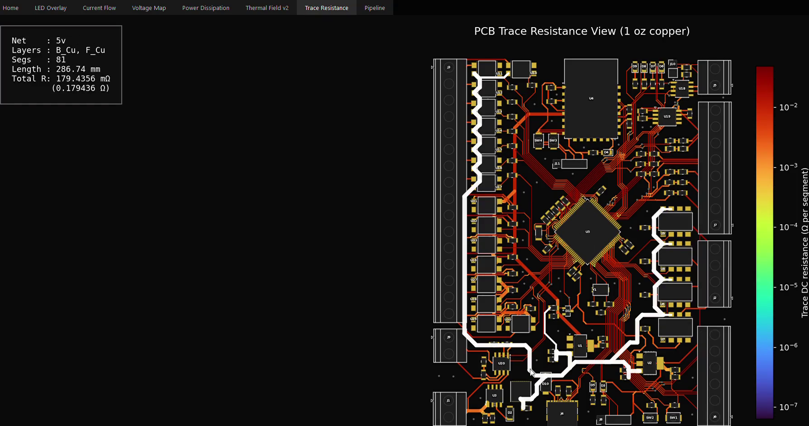
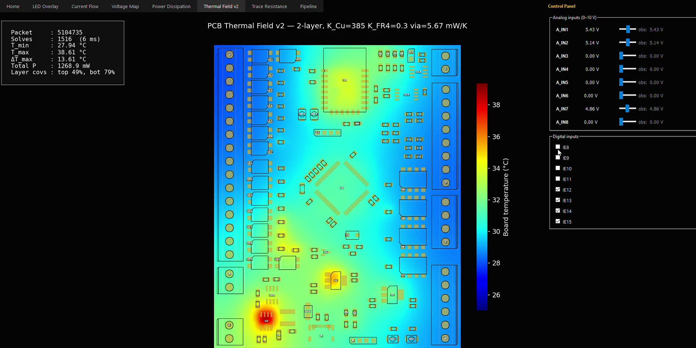

PCB Digital Twin
What it does
A real-time visualization framework that renders a KiCad PCB as a living system. Physical quantities on screen — per-net currents, voltages, thermal fields, LED states — trace from a real KiCad component through compiled STM32 firmware through ngspice, not from hardcoded demo values.
A Python control panel writes into Renode's memory bus exactly like an external field signal. Drag a slider, the value propagates through firmware → SPICE solver → heat diffusion → every viewer on the dashboard updates live.
Seven live viewers
Each viewer renders one physical quantity on the real PCB geometry. All seven subscribe to the same ZeroMQ stream, so they update in lockstep.




The hard part
The simulation wasn't the challenge — generalization was. Making it work for any KiCad board (not just the one I designed) required solving netlist parsing, component classification, and automated model generation without hardcoded knowledge.
FAILURE · HARDCODED NET NAMES EVERYWHERE
The first version only worked on the one board I built. Every rail name (12v,
3v3-LDO1, A_IN1) was baked into the solver. Change one label in KiCad
and the pipeline broke silently.
Fix: Built a source metadata layer — a JSON file that maps every SPICE branch back to its originating KiCad net. The solver reads it at runtime; no net name is ever written into the Python code.
FAILURE · 143 COMPONENTS, NO CLASSIFICATION
SPICE needs a model for every component. Hand-writing 143 models per board defeats the purpose. Initial attempt used a lookup table — broke immediately on any board that wasn't mine.
Fix: Heuristic classifier based on library ID (lib_id) and value
patterns. Unknown components gracefully degrade to a black-box resistor rather than failing the
whole pipeline. 143/143 components resolved on the first full run.
FAILURE · COPPER WAS IDEAL
The first physics model treated every trace as zero-resistance. Rails came out perfect, which is exactly what a real board isn't.
Fix: Compute per-segment trace resistance from the actual KiCad copper geometry (length, width, layer) and inject it back into the SPICE netlist between regulator outputs and load nodes. Now the 5 V rail drops 25.5 mV under load — physically correct.
Architecture
Two pipelines converge on one solver: the KiCad side auto-generates the SPICE netlist; the firmware
side runs the real .elf on a virtual MCU in Renode. ZeroMQ is the message bus that
connects every component.
KiCad (.kicad_pcb) ───► netlist + geometry ───► auto-generated SPICE netlist
STM32 Firmware (.elf) ───► Renode (virtual MCU)
│
▼
ZeroMQ bus
│
┌───────────────┼───────────────┐
▼ ▼ ▼
ngspice solver control panel 7 viewers
Full pipeline diagram, ZMQ topic list, and every file in the repo are documented on GitHub.